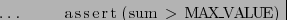
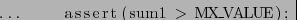
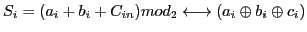
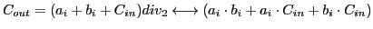

Next: CBMC keywords Up: CBMC Previous: Variable renaming Contents Index
Standard ways of implementing decision procedure is bit vector flattening followed by a call to a propositional SAT solver. In this process first step is encoding statements from goto-program into bit vectors. Encoding variables and constants to bit vectors is a straight forward task, for example a variable X of size N, can be encoded into bit vectors b of length N. Bit vector operations have to be handled on individual bases. For example, let X, Y and Z be integer variable and a[n], b[n] and c[n] be the bit vectors for each variable respectively. For addition of two bits, we can use a one bit full adder circuit as in fig:bitadder. The circuit will provide us with following formula.


Bit flattening is a process of transforming bit vector logic into propositional logic [28]. For example above bit vector logic can be converted to a propositional logic for .


Similarly we can build carry chain adder for bit vectors, subtractor for subtract operation, bit wise operations etc. The multiplication, division and modulo operations generate large formulas. To handle large expressions and large operations incremental flattening is used [28].
As we know from sec:sat:solver, a proposition logic can be verified using SAT solvers. The SAT solver can work on propositional logic of program logic to verify expressions and check different properties of the program logic.
ash 2012-09-13